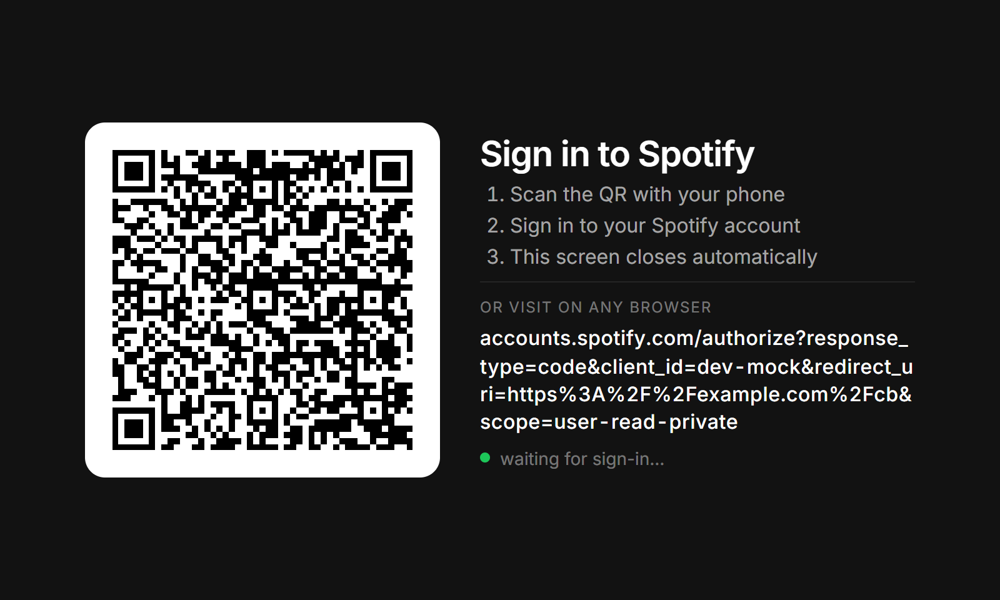
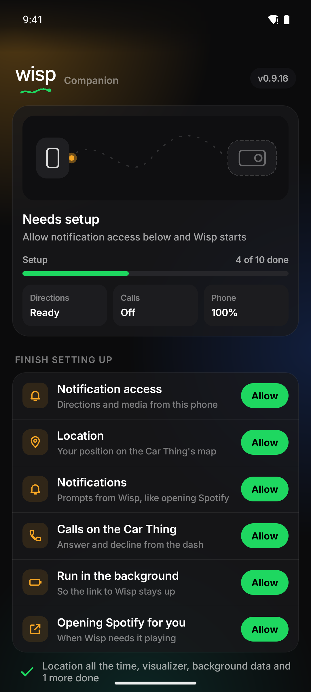

Set up
From the box to the dash.
About 20 minutes, most of it waiting. You only flash once: Wisp keeps itself up to date after that.
00What you need
- A Spotify Car Thing
- A computer (Windows, Mac or Linux) with Chrome or Edge
- A USB-C cable that carries data, not just charge
- A Spotify account
- An Android phone for the Wisp app, for directions, calls and more (Spotify on the Car Thing works without it)
Flashing replaces the Car Thing's software. It's very hard to brick: if anything goes wrong, put it back in flash mode and start again.
01Flash Wisp
- Download Wisp. From the latest release, download
wisp-os-vX.Y.Z-flashthing.zip. Leave it zipped. - On Windows only, install the flasher's USB driver first. In PowerShell:
irm https://driver.terbium.app/get | iex
- Put the Car Thing in flash mode. Hold buttons 1 and 4, the first and last along the top, while you plug it into the computer. A black screen means it's ready.
Hold 1 and 4 while plugging in - Open Terbium in Chrome or Edge and follow its steps to connect.
- At Choose your firmware, pick Local archive and choose the zip.
- Wait 5–10 minutes. If it stops or stalls for several minutes, unplug and start again from flash mode.
- When it's done, unplug the Car Thing and plug it back in (into the car, or any USB power).
The first start takes a minute or two; you'll see Wisp's logo, then the circling light, then the question of how to get online.
02Get it online
The Car Thing has no Wi-Fi, so it borrows your phone's or your computer's internet. The QR codes on its connect screens open these steps.
From your phone, over Bluetooth Recommended
- Turn on Bluetooth tethering on your phone first.
- Android: Settings → Connections → Mobile Hotspot and Tethering → Bluetooth tethering.
- iPhone: Settings → Personal Hotspot → Allow Others to Join.
- On the Car Thing, turn the knob to Your phone and press it.
- Pick Wisp in your phone's Bluetooth list and check the codes on both screens match.
From a computer, over USB
- On the Car Thing, pick A computer.
- Share the computer's internet with it:
- Windows: Win+R →
ncpa.cpl→ right-click your internet adapter → Properties → Sharing → tick Allow other network users… and pick the Car Thing's adapter (UsbNcm Host Device). - Mac: System Settings → General → Sharing → Internet Sharing, to the Car Thing's USB interface.
- Linux: share the connection in NetworkManager to the Car Thing's
enx…interface.
- Windows: Win+R →
03Sign in to Spotify
Scan the QR code on the Car Thing with your phone and sign in. Then play something anywhere on your Spotify account and it shows up on the dash.
Your library, lyrics and the knob all work from here, with or without the phone app.

04Add the Wisp app
- On your Android phone, download
wisp-companion-vX.Y.Z.apkfrom the latest release and install it (allow installs from your browser when Android asks). - Open it and follow the setup steps. Each one says what it's for, and you can skip any.
That turns on directions from Google Maps, calls and notifications, YouTube Music and SoundCloud, Drive Mode, the phone's battery, Wisp's spoken voice and settings from your phone. The app and the Car Thing both update themselves from here on.

05Talk to Wisp
Say "Okay Wisp" and what you want: "play Midnight City", "who sings this?", "take me home", "I'm getting sleepy". The Car Thing understands everyday requests on its own. With the Wisp app connected, it also asks a language model on your phone about anything looser:
- Phones with Gemini Nano (recent Galaxy and Pixel phones) use it automatically: nothing to download.
- Other phones can download an open model in the app (Options → Wisp's thinking, about 345 MB; Wi-Fi recommended).
Wisp's replies are spoken through your phone when Settings → Wisp's voice is on, and always shown on the Car Thing.
?If something's not right
ncpa.cpl.Still stuck? Open an issue.